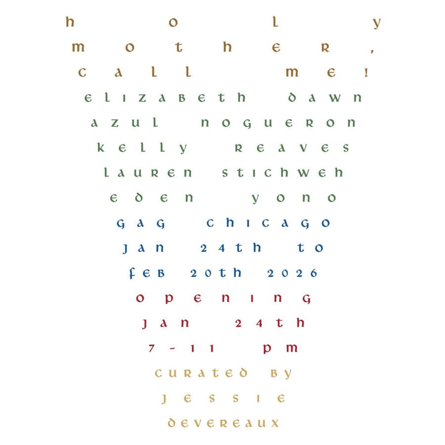

 HOLY MOTHER, CALL ME! Top Pick Saturday, January 24, 2026GAG3528 W Fulton Blvd, Chicago IL 60624 Opening Saturday, January 24th, from 7PM - 11PM On view through Friday, February 20th Official website Elizabeth Dawn Azul Noguerón Kelly Redves Lauren Stichweh Eden Yono Curated by Jessie Devereaux Azul NogueronChicagoEden YonoElizabeth DawnGAGGarfield ParkHOLY MOTHER CALL ME!Jessie Devereaux More events on this date Original listing